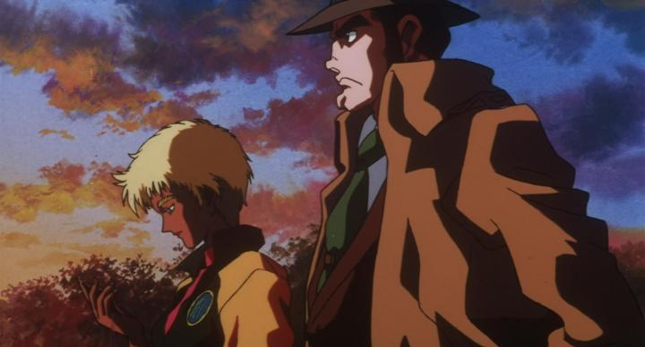

I vaguely remember "Lupin the Third - Dead or Alive" as the movie I was most interested in as a kid among Funimation's early releases, purely based on the title, which sounded cool. Another reason you might be interested in this one over many others from the franchise: Monkey Punch, the author of the original manga, is credited as "director" for this movie. This was also the last big theatrical release for Lupin for almost two decades. Anyway, Discotek has this available on Bluray now for people, like me, who missed it the first time. A funny detail on the box is that they cite Monkey Punch as "director" (in quotes), without further info; online sources suggested he didn't want to direct and ultimately let the production team handle things. Most of Lupin's adventures are zany and silly, but this one tries to be a serious action movie. After a thrilling opening of a jailbreak, we learn Lupin and his crew and scoping out the island of Zufu, with rumours of a massive treasure controlled by the island's royalty. The island is under poltical strife: the king and prince were killed in a coup by General Headhunter, now serving as the ruler, and he maintains order through strong military power. His daughter is locked in the castle, and said to be the only one with the secret to getting past the treasure vault, which has mysterious shape-shifting technology to skewer anyone that comes near it. There's also Oleander, the skilled policewoman, working directly with the General to stop Lupin from succeeding (of course, Inspector Zenigata is also on the case). But it is possible that the original Prince is still alive, and staging a rebellion? And if so, which side will Oleander, his lover, pick? The title comes from the General ultimately listing a bounty on Lupin's head, adding a brief segment of bounty hunters chasing after him. There are some ambitious, and cool, ideas to the story, but I'm not convinced that it fully paid off. The General's daughter for example is a plot point quickly abandoned. The story is moderately interesting, but the slow pacing might make it hard to remain invested all the way through. And as a minor point, the ending scene makes no sense at all. Part of the issue might be the movie trying to play things cool: even Zenigata (sporting a chin that looks like two golf balls) is competent and strong here. The movie's not entirely devoid of comedy, and perhaps compared to the original manga, is more authentic, but for fans of the cartoon, it's a different tone. Fujiko's also a little sexier here than usual, and some of the minor goons sent to kill the group have wildly bizarre and grotesque designs... perhaps this was an attempt to be a more "adult" Lupin. Things are similar for the production values: there's something different, possibly higher budget, than most of Lupin's movies. This actually looks like a cel-animated production, not too disimilar to classic 90's movies like "Ninja Scroll" or "Ghost in the Shell," or "Cowboy Bebop the Movie" shortly after. It's not all as good as those, but it's an improvement to the franchise, and if you're a fan of this era of animation, this will be a treat, especially certain segments like the opening chase.  Funimation's old dub is included on the Discotek disc, and it was one of the company's earlier dubs, back when dub quality wasn't all that great. The cast for the main characters are fine, and as I remember them. There's a lot of side characters though, some of whom are different ethnicities... the choice of acting delivery might be a little racist. Sensitive or not, the side characters generally don't sound great, and it's noticable. "Lupin the Third - Dead or Alive" isn't a bad movie, but aside from better quality of traditional physical-cel animation, there's not a lot to make it stand out. The tone of the story also makes it arguably less entertaining - if you like a more serious, gritty Lupin, I'd recommend the much later movies by Takeshi Koike.
- "Ani" More reviews can be found at : https://2danicritic.github.io/ Previous review: review_Lupin_the_Third_-_Bye_Bye,_Lady_Liberty Next review: review_Lupin_the_Third_-_Episode_0_-_First_Contact